Part 2 of 2
GPS InformationThis screen shows the current status of GPS reception. The circular diagram shows the current location of the GPS satellites (yellow numbers) as they would appear in the sky. The outer circle represents the horizon (0 degrees elevation). The middle and inner circles represents 30 and 60 degrees respectively. The very center of the diagram (90 degrees elevation) is directly overhead. Nearby obstructions, like tall buildings will block satellites in that direction. That is why it is necessary to be in an open area to effectively troubleshoot GPS reception issues. The satellite numbers shown on the diagram correspond to the "PRN" number in the "GPS Details" screen. There are always at least 24 "active" GPS satellites in orbit. Because satellites fail, and have to be removed from service, spares are always parked in orbit, ready to be activated. This is why the PRN (satellite ID number) can be greater than 24.
NOTE: To use this screen for troubleshooting, the vehicle should be outside away from buildings, tall trees, and high-tension wires for at least 10 minutes with the engine running.
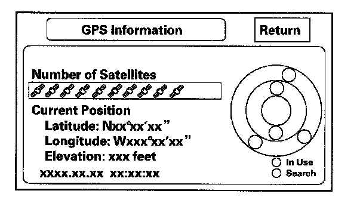
- The "Number of Satellites" box shows the number of acquired satellites (maximum of 12). It should contain four or more icons. If not troubleshoot for "GPS icon is white or not shown".
- The "Current Position" shows latitude, longitude, and elevation (in feet). If there are less than four satellites, the elevation can be grossly inaccurate.
- The Date/Time field shows the current date, and also GMI time.
NOTE: Pressing the "map guide" button displays the satellite number on each circle.
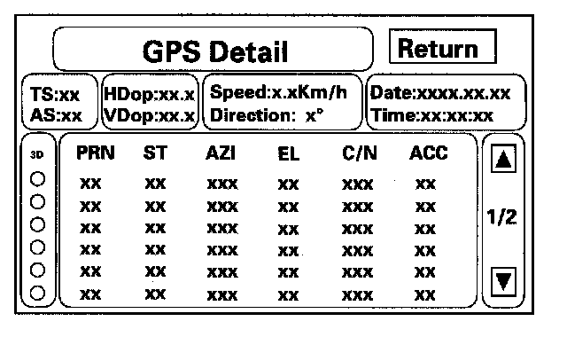
GPS Detail
By pressing and holding the MENU button for 10 seconds, a GPS Detail screen appears. This screen displays real time incoming satellite positional data when the vehicle is outside in the open. The information shown on this screen is for factory use.
- The box TS/AS and H Dop/V Dop is for factory use.
- The Speed and Direction information is updated in real time when driving.
- The Date/Time Information is the same as in Setup screen 2 "Adjust Time Zone/Clock."
- If the "3D" icon is shown above the yellow dots, this implies that at least four satellites are available for map positioning, and the "GPS" indicator on the map screen will be green. See the "Global Positioning System" detailed explanation in the "System Description".
- If the row of data in the table below begins with a "yellow dot", the AZI and EL fields can be used to locate each satellite on the circular GPS diagram (see prior screen).
NOTE: The data shown in the GPS Detail screen is an example only.
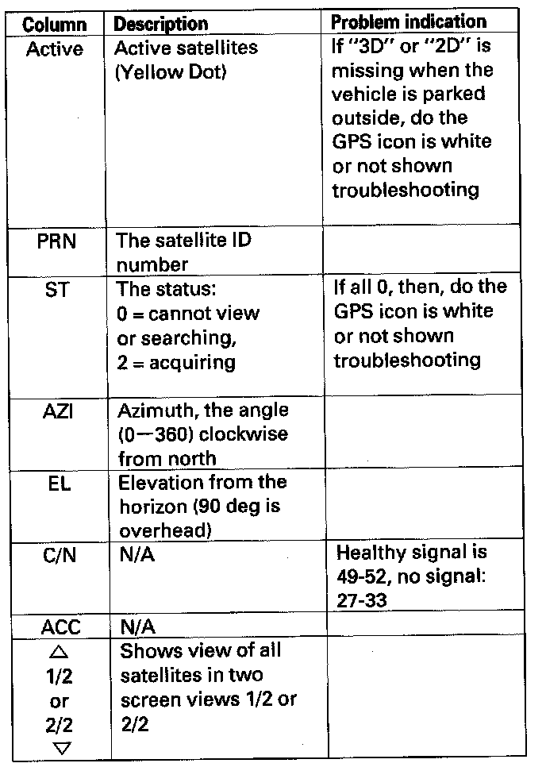
The table of values shown on the screen has the columns:
Yaw Rate
This diagnostic checks the yaw rate sensor in the control unit. This device detects when the vehicle turns, and repositions the vehicle position icon on the map screen. For more detailed information, see the yaw rate sensor theory of operation under "System Description".
- "Sensor" indicates the voltage output from the yaw rate sensor. It should indicate about 2.500 volts when stopped.
- "Offset" is the reference voltage or standard within the yaw rate sensor. It also should indicate about 2.500 volts when stopped.
- A "sensor" output voltage LOWER than the "Offset" voltage indicates that the vehicle is turning to the right.
A "sensor" output voltage HIGHER than the "Offset" voltage indicates that the vehicle is turning to the left.
- The yaw rate offset, and sensor should both indicate about 2.500 volts when stopped. If either reads zero, or 5.000 volts, replace the navigation unit.
- The yaw rate offset and sensor should be within +/ - 0.01 V of each other when stopped. The sensor value should change relative to the offset as the car is turned while driving. If not, replace the navigation unit.
Example: Car stopped
Normal
Offset 2.526 V
Sensor 2.516 - 2.536 V
Abnormal
Offset 2.526 V
Sensor 2.623 V
Example: Car turning
Normal
Offset 2.526V
Sensor 2.678 V (left turn) 2.478 V (right turn)
Abnormal
Offset 2.526 V
Sensor 2.623 V (no change on turns)
- "Sensitivity study" represents the status of the internal tuning function. At initialization, this value starts at 6 and increases to # 10 as the internal correction values become more accurate.
- The settings "CCW Cal Factor," "CW Cal Factor," and "Set" are for factory use only. THIS SHOULD NEVER BE ADJUSTED.
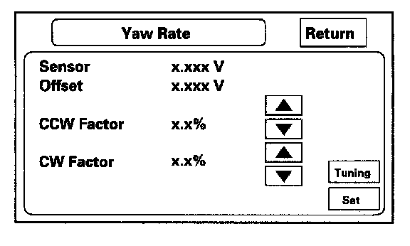
- For detailed analysis of the yaw rate select "tuning."
Yaw Rate Tuning
This diagnostic allows you to graphically display problems with the yaw rate sensor.
- The "ANG-Disp" value accumulates any differences between the "offset," and "sensor" voltages (see Yaw Rate diagnostic). When the sensor is functioning normally, the random changes in these two voltages generally cancels out, so the value is 0. However if one voltage is consistently higher than the other, then the "ANG-Disp" value accumulates the constant change.
- The "Reset" button temporarily clears the angular accumulation (ANG-Disp), and clears the display dots.
- Do not touch the "CCW," "CW," or "Set" buttons. These are used for factory setup only.
Two tests are explained below. For gross problems with the sensor, the stationary test usually confirms whether the sensor is defective. For yaw rate issues related to driving, perform the road test described below.
1. Stationary test: If the "VP" icon spins in place and the "ANG-Disp" value slowly increases or decreases in value, the yaw rate sensor is defective. Replace the navigation control unit.
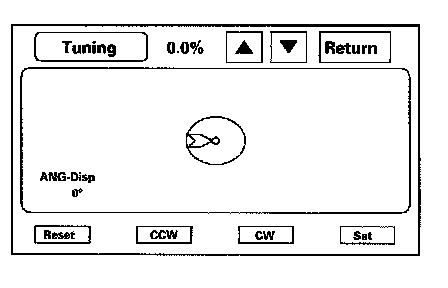
2. Road test: Drive the vehicle on a very straight road. Enter the diagnostic mode, select "Yaw rate," and touch the "Tuning" button. While driving down a straight road, the white "dots" should trace a straight line across the screen. However, if you are driving on a straight road, and you notice the dots constantly dropping down or heading up as you drive, the navigation control unit's yaw sensor is defective. You can touch "Reset" to clear "ANG-Disp," and dotted lines.
If either test above fails, please enter "Yaw rate sensor defective" for the problem description, on the "Navigation core return form."
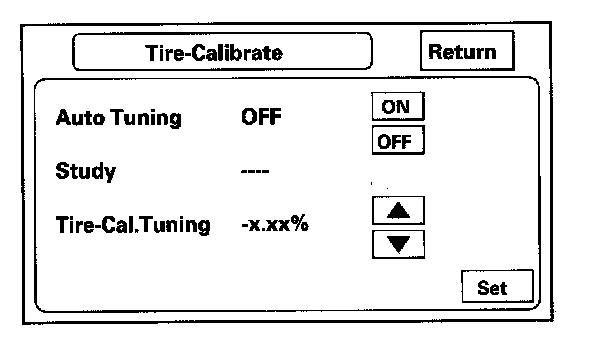
Tire Calibrate
As the vehicle moves, the navigation system receives speed pulses from the PCM. These pulses are converted using a conversion factor to a mph speed that moves the vehicle position (VP) on the map. The navigation system has an internal tuning function that generates and refines this factor based on actual driving. The "Study" indicates the status of the tuning. At navigation initialization, it begins at 0, and increases to 10 as the navigation system is used.
- The "Auto Tuning" is factory set to "ON," and should remain on.
- The "Study" indicates the tuning status. If it is less than 10, the unit is still calibrating.
- The "Tire-Cal. Tuning" and Set should not be used. It is for factory use only.
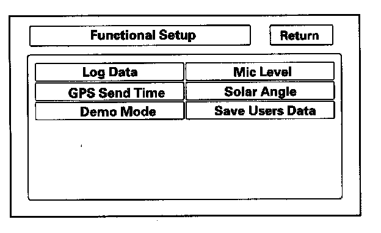
Functional Setup
Select the item you want to check.
- Log Data
- GPS Send Time
- Demo Mode
- Mic Level
- Solar Angle
- Save Users Data
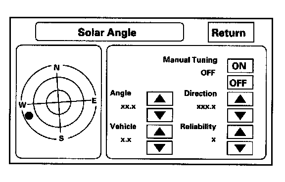
Solar Angle
This screen graphically displays the sun's position as determined by GPS. The HVAC system uses the navigation systems sun's angle, along with the sunlight sensor to control the driver/passenger A/C air flow. The heat that the climate control unit removes varies, depending on the angle of the sun entering the vehicle. This screen is for factory use only, and should not be adjusted.
- The screen shows a circular diagram of the sky oriented in the direction that the vehicle is pointing. During daylight hours a red dot is shown, representing the direction and elevation of the sun. The outer circle represents the horizon (0 degrees elevation). The middle circle is 30 degrees, the center circle is 60 degrees, and the very center is directly overhead (90 degrees).
- The "manual tuning" button should always be "OFF."
- The "Angle" is the angle that the sun (shown with red "dot") is above the horizon.
- The "vehicle" value represents the angle, clockwise from North, to the direction that the vehicle position (VP) icon is pointing (always points straight up).
- The "direction" value is the angle, measured clockwise from the VP (straight up) to the suns position.
- The reliability ranges from 1 to 3, and represents the accuracy of the Vehicle Position relative to the sun.
Log Data
This screen allows the factory to select log data to troubleshoot navigation system issues.
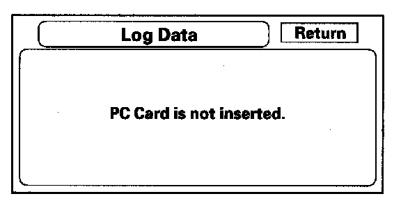
- Normally there is no card in the "PC Card Slot," and the PC slot door should always be closed. The screen should look like above.
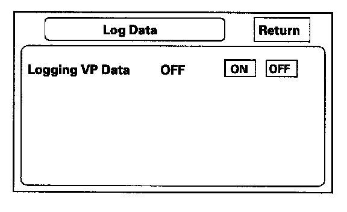
- However, if the factory provides a PC card and instructs you to insert it into the card slot (label side up). If instructed by the factory, select "Gyro. Sensor Logs ON." Follow the factory procedure for gathering test data, and properly ending the test.
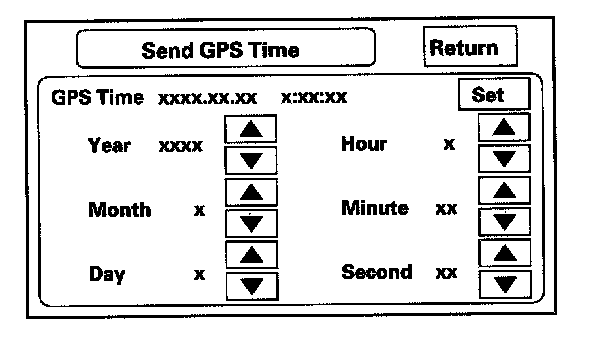
Send GPS Time
This screen is for factory use only. It allows adjustment of the GPS time. This display updates in real time.
- "GPS Time" is the time as received from the GPS satellites. It is in Greenwich Mean Time (GMT).
- Date, Hour, Minute, and "Set" should not be used.
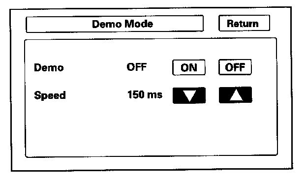
Demo Mode
This screen is for factory use only, and should always be set to "OFF." Occasionally "DEMO" setting is turned "ON" when vehicles are being used at Auto Shows or similar events. Turning this feature on, allows the navigation system to automatically follow a route to a destination when the vehicle is stationary. The "Speed" can change the speed of the demo mode.
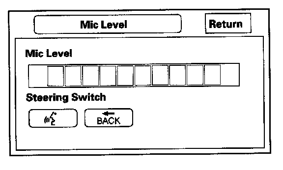
Mic Level
This diagnostic allows you to independently test the microphone and the NAVI TALK and BACK buttons. They are used to activate the voice control system. The microphone is located near the map light in the roof console. It is directional, and works best with the voice coming from the drivers seat.
- Press the TALK button on the steering wheel, and in a normal voice say "testing." The TALK indicator on the screen should momentarily turn green, and the text "Now Recording..." should appear in yellow. If the TALK indicator on the screen does not briefly turn green, then check the wiring from the steering wheel TALK button to the navigation unit. If there is no "Mic Level" movement when you speak, then you should check the wires running from the microphone in the roof console to the HFL unit and the navigation unit. If the wires are OK, the microphone must be faulty; replace the roof console.
- Press the BACK button on the steering wheel. This should cause the BACK indicator on the screen to momentarily turn green. If it does not briefly turn to green, then check the wiring from the steering wheel BACK button to the navigation unit.
Version
This screen displays the current version information for the navigation system software. In addition, this screen allows the loading of updated software if requested by the factory, or instructed by a Service Bulletin. Software may be loaded from a CD or a PC card.
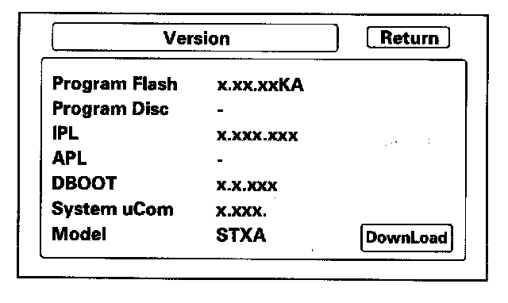
- Program Flash: Displays the version of the navi software in memory.
- Program Disc: If displayed, this value represents the version of the navi software on the navi DVD.
NOTE: The last two letters of the Program "Flash" or DVD fields indicate which DVD is installed in the unit. The letters "KA" imply that a "United States" DVD is installed. If the letters are KC, then a "Canada" DVD is installed. (See coverage discussion below.)
- IPL, APL, DBOOT, and System uCom, are all for factory use.
- Model: For this model, the field should begin with "STX."
- Download: Do not touch, unless instructed by the factory.
There are two navigation DVDs produced for this model.
- The white DVD labeled "United States" is for the US market and contains maps for the contiguous 48 US states, and some southern portions of Canada. Clients wanting additional northern coverage in Canada, can purchase a "Canada," DVD by contacting the DVD fulfillment desk.
- The gray DVD labeled "Canada," is for the Canada market, and contains maps for all of Canada, plus some of the northern US states. If clients with this DVD require full US coverage (including states like Florida and Texas), they may purchase a "United States" DVD by contacting the DVD fulfillment desk.
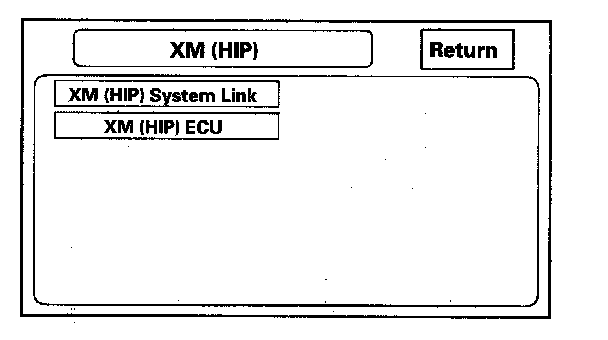
XM (HIP)
These screens allow troubleshooting of XM or HIP (AcuraLink) problems. Select the item you want to troubleshoot, and follow the diagnostic instructions.
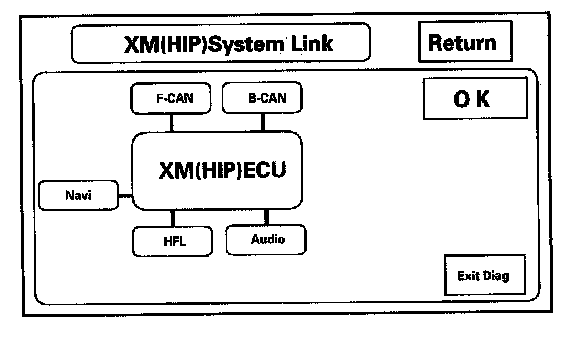
XM (HIP) System Link
This diagnostic tests the cables connecting the XM (HIP) components.
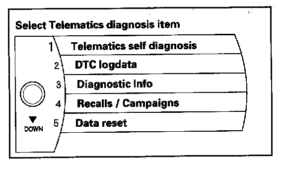
XM (HIP) ECU
Select the item you want to troubleshoot, and follow the diagnostic instructions.
NOTE: Only select "DATA RESET" when instructed. Selecting "DATA RESET" will clear the AcuraLink registration, and the AcuraLink service will reset to the factory default. If the vehicle was already registered for the AcuraLink service, it will have to be reactivated by calling Acura Client Services before all features will be available. The reactivation will cause the Feature Guide to start over at the first message, which will result in the client getting repeated messages.
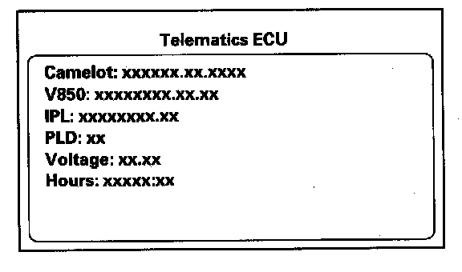
Telematics Self-Diagnosis
This screen used to do self-diagnosis for the XM (HIP).
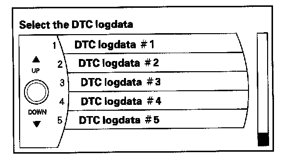
DTC Log Data
You can check the DTC log data in this screen.
NOTE: When DTC B2200-B2249 is displayed. It is in engineering mode and is not for trouble diagnosis.
Save users Memory
When replacing the navigation unit, this function allows the dealer to transfer the client's personal data to the new navigation unit.
This is similar to saving and entering the client's audio presets when replacing an audio core. The transferred information includes their Setup settings, and personal addresses. The dealer inserts a PC card (like the PC card in the HDS), and then selects the "Save users Memory" function. The two functions in this diagnostic screen are Export and Import saves the client's data to the PC card, and Import moves the PC card files to the new core.
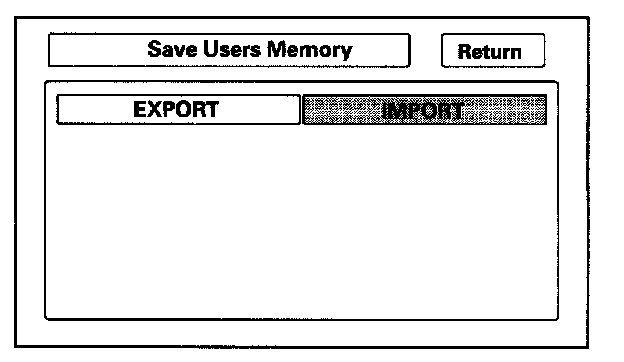
See the FAQs below for information regarding PC cards, and the use of this function.
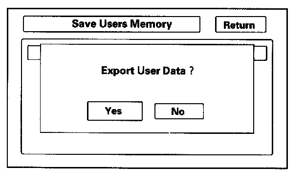
Export
Select this button to move the client's data from the original navigation unit to the PC card. Select "YES" on the "Export User Data" Confirmation screen. The process takes only a couple of seconds. The system stores two small files on the card.
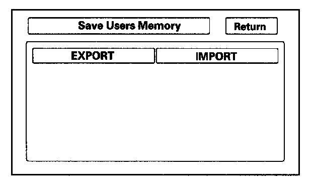
Import
After installing the client's original DVD in the new core, allow the system to boot up. Insert the PC card in the new core and enter the navigation diagnostic mode.
Select "YES" on the "Import Confirmation" screen.
Import moves the two files stored by the Export process from the PC card to the new navigation unit. When the transfer is finished (a few seconds) the system will automatically reboot. After the system reboots, remove the PC card from the PC slot.
If the Import button is grayed out, follow the troubleshooting in the FAQs below. The client's files can only be transferred to a new core if the "Model" and the "Program Flash" shown on the "Version" screen are the same. These files cannot be transferred from TSX to MDX, or from a MDX with version 1.07.00 to a MDX with version 1.32.00.
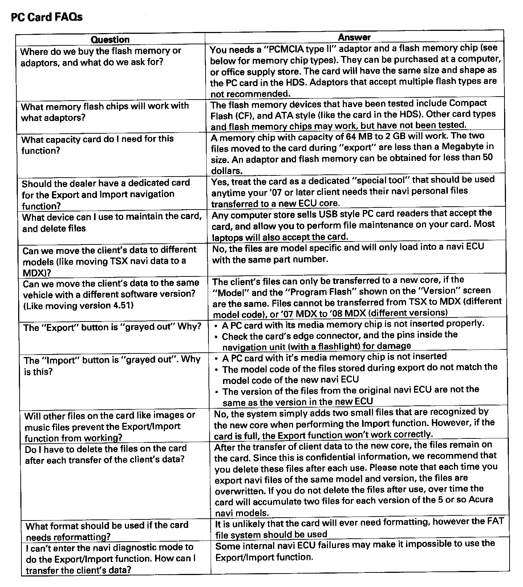
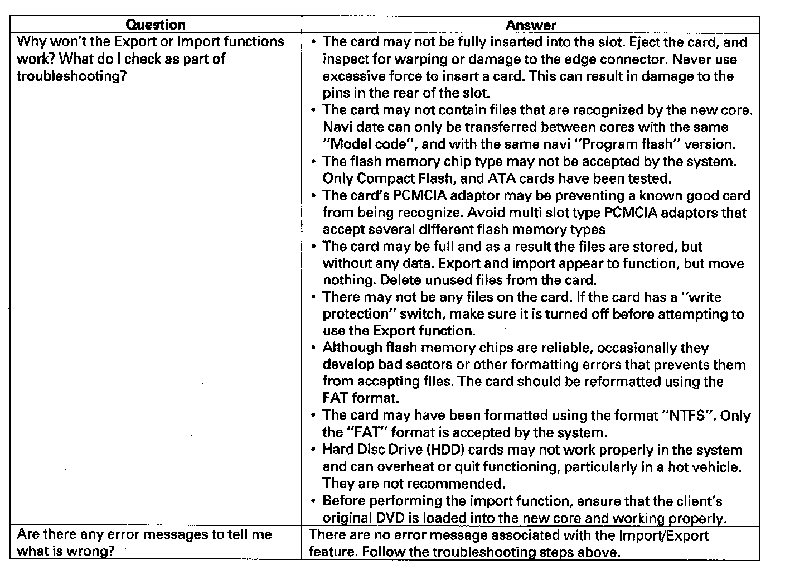
PC Card FAQS
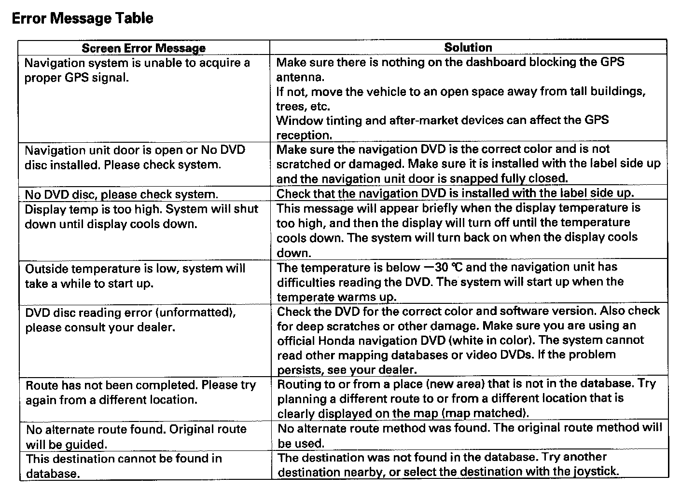
Error Message Table